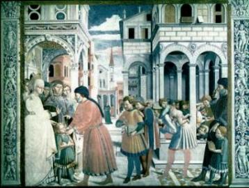
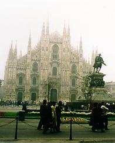
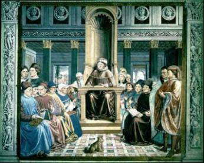
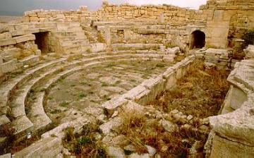
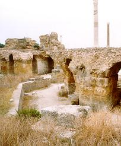
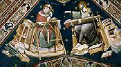
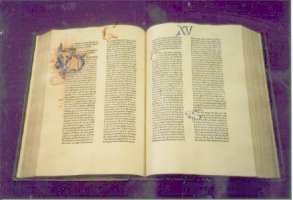
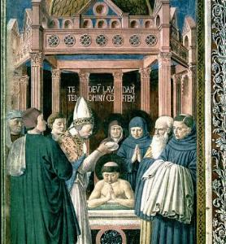

NO CAMINHO DA CONVERSÃO
- Por esta época, Agostinho já
NO CAMINHO DA CONVERSÃO
- Por esta época, Agostinho já
andava desiludido com o maniqueísmo, começava a perceber as suas imperfeições e disparates.
NO CAMINHO DA CONVERSÃO
- Por esta época, Agostinho já
Em Milão, atraído pelo dom de oratória do Bispo Ambrósio, foi algumas vezes à Igreja para ouvir as suas homilias. Aquela maneira de falar tão cativante, amistosa e paternal de Santo Ambrósio, levou-o a procurá-lo diversas vezes para conversarem sobre religião, ensejando-lhe ouvir os argumentos do prelado sobre temas que intimamente lhe perturbavam. Estava assim, numa fase de transição, querendo saber qual era a verdade e sentia que no seu cérebro havia uma torrente caudalosa de conceitos e teorias, que confundiam a sua razão, deixando-o desorientado, não lhe permitindo enxergar a realidade dos fatos.
E justamente, esta foi a primeira boa noticia que Mônica teve, logo que chegou. Sem dúvida, uma noticia alvissareira, porque relacionada com o seu principal objetivo, que era converter Agostinho e por isso, ficou emocionada com os olhos brilhando de satisfação.

Dessa forma, nas oportunidades que surgiam, propositalmente Mônica deixava o filho em companhia do Bispo. Os diálogos animados que aconteciam, alegrava-o e também ia satisfazendo o seu desejo pessoal de conhecer a verdade. Entretanto, muito vaidoso pela posição de Reitor que ocupava na Faculdade, às vezes permanecia na expectativa, ansiando receber de Dom Ambrósio um elogio sobre a sua excelente conduta na Escola. Mas o Santo prelado, que lia o seu coração e via aquele desejo estampado, com habilidade procurava remover aquela fraqueza de seu caráter, agindo de maneira indireta, tecendo sinceros e merecidos elogios à sua mãe, ressaltando a sua piedade cristã e sobretudo, revelando com ênfase, o imenso carinho que ela tinha por ele.
Nas Missas que Agostinho voltou a frequentar, para ouvir os sermões do Bispo, começaram a despertar-lhe uma atração cada vez maior pela grandeza do conteúdo que encerra o mistério eucarístico, que aos poucos ia gravando em seu coração e desmoronando os últimos baluartes que continham guardadas aquelas falsas e errôneas idéias sobre o cristianismo.

A situação podia ser apresentada como num polígono de quatro ângulos, no qual em cada ângulo estava um protagonista: Agostinho, Mônica, a amante e Adeodato, que necessitavam de urgente solução para as suas vidas a fim de definir a posição de cada um. Da conversa e entendimento entre eles, teria que sair a solução para o problema. O matrimônio de Agostinho com a amante, legalizando a vida em comum, tornou-se impossível por uma infinidade de motivos: ela era uma mulher pagã, de princípios e por ações; representava um passado vivo que tinha que ser esquecido, pois ambos praticaram o maniqueísmo, seguindo regularmente os preceitos da seita, a qual ela ainda estava ligada. A união de ambos também não atendia ao conceito tradicional de família e vida conjugal cristã. Por isso Mônica não estava animada em sugerir uma legalização da união, principalmente agora, que o seu filho começava a vislumbrar as luzes do verdadeiro caminho que conduz a DEUS, à medida que pesquisava e estudava os fundamentos da religião. Mas a par com tudo isto, havia o lado humano da questão, que tornava a separação dolorosa e repleta de tristezas. Assim, depois de muitas palavras veio o ajuste final. Ele ficou com o filho Adeodato e a mulher voltou sozinha para Cartago.
Foi um drama a separação, que lhe causou angústias e aflições. E no meio de uma terrível luta íntima, revelou ser um grande homem, pois se humilhou com decisão, reconhecendo os seus erros e sua insensatez optando definitivamente pelo correto. Sofreu conscientemente, porque reconhecia que aquela era a única solução.
Com o passar das semanas, as chagas foram
cicatrizando-se e a paz lentamente veio chegando a seu coração. Mas ainda os
dias eram muitos negros. Na sua mente a volúpia passou a operar intensamente,
despertando desejos proibidos que lhe corroíam a alma. Era a lembrança do mal,
sempre presente, que lhe incitava e fustigava o seu íntimo, sem que ele pudesse,
apesar de toda a sua erudição, conseguir uma maneira de vencer a tentação
diabólica. A concupiscência era muito forte, dilacerava as suas entranhas,
enfraquecia a sua 
Certo dia, na ausência do Bispo, procurou o Padre Simpliciano que viera de Roma para ser o diretor espiritual de Ambrósio. Simpliciano era como um pai para o Bispo, pois o tratava com desvelo e com todos os cuidados de um atencioso protetor.
Agostinho abriu o coração e contou ao Padre a sua vida. O prelado silenciosamente ouviu o relato sem nada comentar. Porém, quando Agostinho falou que tinha lido uns livros platônicos traduzidos para o latim por Vitorino, o Padre quebrou o mutismo e deu-lhe os parabéns pelo fato de os ter lido e não se ter enveredado por escritos de outros filósofos menos escrupulosos e cheios de engano.
Padre Simpliciano conheceu Mario Vitorino pessoalmente e sabia que ele era um filósofo muito respeitado. Dada a sua projeção intelectual, teve uma estátua no Fórum de Trajano, em Roma, como homenagem aos seus grandes conhecimentos e a sua obra. Entre outras, traduziu para o latim a Isagoge de Porfírio, a Eneida de Plotino e as Categorias de Aristóteles. Escrevia sobre filosofia, retórica e religião, mas seus conceitos religiosos deixavam muito a desejar, porque estavam impregnados de heresias, oriundas de pesquisas mal orientadas. Mas Vitorino converteu-se com a ajuda do Padre Simpliciano e tornou-se um valente cristão, sendo inclusive memoravelmente batizado na Catedral de Milão.
Para aqueles que tinham muita fama, ou que tinham pouco desembaraço, ficando acanhados no momento da cerimônia, a Igreja permitia que fizessem reservadamente o voto de fé. Mas Vitorino tinha pregado abertamente a heresia contra a doutrina cristã, usado de todos os seus conhecimentos e da sua inteligência para apontar erros na religião católica. Por este motivo, resolveu professar publicamente a Doutrina de NOSSO SENHOR JESUS CRISTO, que agora, ele estava plenamente convicto de que era a certa, desculpando-se assim, de seu passado cheio de equívocos e inverdades.

E nesta guerra intima, certo dia em que se encontrava com o espírito extremamente exaltado e com o coração torturado por um turbilhão de dúvidas, ouviu uma voz de criança vinda da casa ao lado. Não pode verificar se era de um menino ou de uma menina. A criança apenas cantava e repetia: "toma e lê", "toma e lê".
Que significava aquilo? Seria o refrão de uma música? Certo é que olhando com atenção para a sua pessoa, observou que na pequena mesa em que se encontrava, bem a sua frente, estava um livro com as Epístolas de São Paulo. Abrindo-o ao acaso, as palavras que seus olhos viram, foram:
"Como de dia andemos decentemente; não em orgias e bebedeiras, nem em devassidão e libertinagem, nem em rixas e ciúmes. Mas vesti-vos do SENHOR JESUS CRISTO e não procureis satisfazer os desejos da carne". (Rm 13, 13-14)
Alípio, seu inseparável amigo, estava junto e admirado presenciou a forte comoção que ele sentiu.
Não leu mais nada. Fechou o livro, abaixou os olhos e assentou-se numa cadeira próxima. Uma sensação de paz interior apossou de seu corpo. Finalmente, sentiu que tinha conseguido a primeira vitória sobre a sua vontade. A palavra de DEUS tranquilizou a sua alma, dominando a sufocante confusão de idéias e os maus pensamentos que queriam arrastá-lo de volta ao vício. Era um passo importante na sua conversão.
Em companhia de Alípio, fez questão de levar este fato ao conhecimento de sua dedicada mãe, ela que sacrificara a vida inteira para tirá-lo do caminho da perdição e ainda lutava com todas as forças, a fim de orientar sua alma para DEUS.
Agostinho ao vê-la sentiu as lágrimas de alegria inundar-lhe os olhos, ao mesmo tempo em que se jogou nos braços dela e sem dizer qualquer palavra, carinhosamente acomodou-se em seu regaço. Mônica compreendeu a transformação, não eram necessárias as palavras. As suas preces tinham sido bem recebidas pelo CRIADOR e agora começava a concretizar o seu ideal tenazmente perseguido por tantos longos anos: a conversão de seu filho.
Com a maior presteza Agostinho se desfez dos compromissos em Milão, pois sentia a necessidade de ficar só. Queria isolar-se o mais depressa possível, por que desejava organizar a sua cabeça e a sua vida, assim como, precisava de mais tempo disponível, para estudar a religião e penetrar conscientemente nos mistérios de Deus.

RETIRO ESPIRITUAL
- No meio dos diversos amigos que conquistou na Reitoria teve em
Verecundo um sincero companheiro, que conhecendo o seu
Por outro lado, Romaniano, o seu grande protetor ajudou-lhe financeiramente a comprar todo o necessário, a fim de que pudesse passar um longo tempo distante do burburinho da cidade.
Assim, terminado o ano escolar, em companhia da mãe, do irmão Navígio, do filho Adeodato e de alguns discípulos mais afeiçoados, seguiram para a Quinta de Cassiciaco, onde ficaram desde setembro de 386 a março de 387, durante seis meses, pesquisando, estudando e formando em cada um deles, uma sólida cultura cristã.

Cassiciaco chama-se hoje Cassago de Brianza, situado aproximadamente a 42 quilômetros de Milão, encravado no meio das montanhas. Na colina onde existia a casa de Verecundo, levantaram séculos mais tarde, o palácio do Duque Visconti.
Naquele recanto aprazível, tudo concorreu de maneira certa e proveitosa, para o aperfeiçoamento espiritual de todos eles.
Mônica repleta de felicidade, nas folgas
de suas ocupações caseiras, observava o desenvolvimento extraordinário do filho.
De vez em quando, era solicitada por ele, que também sempre contemplava a
santidade dela, porque reconhecia em sua mãe uma admirável experiência e
grande sabedoria de vida, para participar das "rodas de 
Agostinho estava tão envolto por um ardentíssimo amor a DEUS, que abrasava o seu coração com um poderoso ímpeto e o levava a exclamar com indizível ternura:
"O beleza antiga e sempre nova, muito tarde te conheci, muito tarde te ameiâ€...
Voltando à cidade, foi batizado na Catedral de Milão pelo Bispo Ambrósio. Nesta oportunidade, também foram batizados Adeodato e os discípulos que o acompanhava. Seu irmão Navígio já tinha sido batizado em Tagaste.

FOTOGRAFIAS: 1)Agostinho em Milão, confraternizando com pessoas; 2) A famosa Catedral Duomo em Milão; 3) Ministrando aula em Milão; 4) Ruínas do Teatro em Madaura, Algéria; 5) Ruínas de Cartago na Tunísia; 6) Desenvolvendo estudos espirituais; 7) Bíblia manuscrita; 8) Agostinho é Batizado em Milão por Dom Ambrósio.